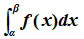

×
Aποδεικνύεται ότι,
"Το όριο του αθροίσματος Sν , δηλαδή το υπάρχει στο R και είναι ανεξάρτητο από την επιλογή των ενδιάμεσων σημείων ξκ".
Το παραπάνω όριο ονομάζεται ορισμένο ολοκλήρωμα της συνεχούς συνάρτησης f από το α στο β, συμβολίζεται με  και διαβάζεται "ολοκλήρωμα της f από το α στο β".
Δηλαδή,